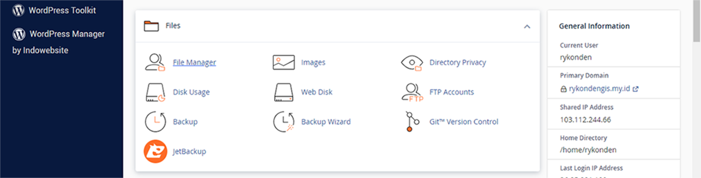
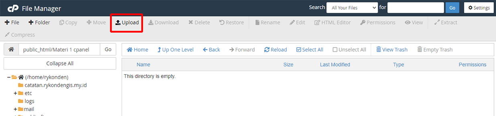
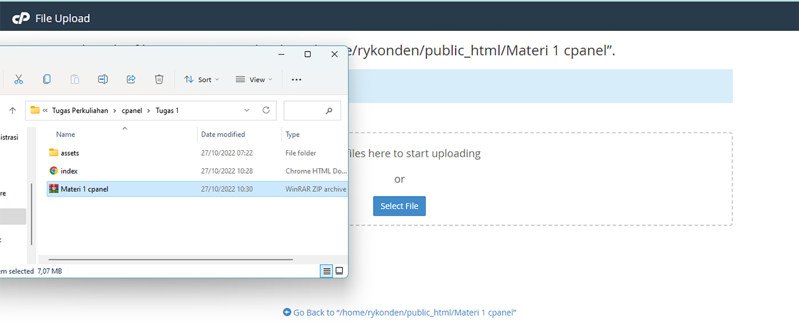

1. Apa itu A Record, CNAME Record, MX Record dan TXT Record?
a) A Record
A Record adalah jenis catatan dns, dimana A singkatan dari address yang berarti alamat.
Fungsinya untuk mengarahkan nama subdomain langsung ke alamat ip.
Jadi, dengan memasukkan subdomain ke browser, maka akan langsung diarahkan ke alamat ip dari website itu sendiri.
b) CNAME Record
CNAME Record hampir sama dengan A Record, akan tetapi CNAME Record
Fungsinya untuk mengarahkan nama subdomain ke nama domain.
CNAME dapat memungkinkan anda untuk mengarahkan subdomain ke domain lain.
c) MX Record
TXT Record dapat memungkinkan anda agar domain dapat diakses dan
dibaca hanya dengan cara memasukkan teks yang ada di alam domain tersebut,
sehingga dengan teks yang mereka masukkan, akan muncul sesuai dengan nama domain anda.
2. Cara Upload File Di Cpanel
Pastikan bahwa anda sudah memiliki file html beserta css nya yang nantinya akan ditampilkan di halaman website,
disini saya sudah memiliki file tersebut dengan nama "index.html" sebagai file html-nya dan
assets yang berisi komponen-komponen dalam html, seperti file css, image, dan lain sebagainya.
Login ke cpanel dan kemudian masuk ke menu Files > File manager, maka
akan muncul tampilan dari folder-folder.

Maka akan muncul tampilan file manager seperti berikut ini :
Pilih "Public_html" Kemudian klik "+ Folder" untuk menempatkan lokasi file html kita.
Kemudian kita bisa memberikan nama apa saja pada folder tersebut, disini saya namakan
"Materi 1 cpanel", Dan Create new folder.
Maka folder akan tampil seperti berikut ini :
Selanjutnya, Masuk ke folder file html yang akan di upload, setelah itu
arsipkan file tersebut dalam bentuk .zip
Maka File hasil arsip akan dibuat :
Lanjut ke langkah Selanjutnya yaitu kita akan melakukan upload file dengan cara drop file.
caranya yaitu, masuk ke folder yang sudah dibuat tadi di cpanel, kemudian klik menu Upload :

Maka akan muncul tampilan seperti berikut ini :
Selanjutnya buka lokasi file html dengan tampilan minimize

Lakukan drop files zip ke area Select file, maka proses upload file akan dimulai
Setelah proses upload file sudah selesai, klik "Go Back To..."
Hasil upload file tadi akan muncul di folder yang sudah dibuat
Untuk mengekstrak file tersebut, klik file tersebut kemudian klik kanan > Exctract, maka
hasil ekstrak dari file tersdebut akan muncul sebagai berikut ini :
Nah, itulah cara upload file di cpanel dengan cara drop file.
3. Cara Buat Database Di Cpanel
Masuk ke halaman menu cpanel
Masuk ke menu Database
Setelah itu pilih menu "MySQL Databases"
Di bagian kolom New Database masukkan nama database yang akan dibuat,
Sebagai contoh, disini saya membuat nama databse "latihan"
Kemudian klik "Create Database", Maka database berhasil dibuat
Untuk mengecek database yang sudah dibuat, Kita cukup melakukan scroll ke bawah
hingga muncul bagian "Current Databases"